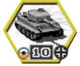

Unit

| Unit Leaders | |
| Axis | Allies |
 |
 |
| Can attack ? | |
 |
Yes |
 |
No. No ammo. |
| No. Already attacked. | |
| Unit Strength | Axis | Allies | |
| Core | 10 | 10 | |
| moved | 10 | 10 | |
| Auxiliary | 10 | 10 | |
| moved | 10 | 10 | |
Weather
| Name | Effect | |
| Ground | ||
| 6 | Dry | |
| 7 | Mud | Reduced movement |
| 8 | Frozen | Can pass rivers in same turn, Reduced movement |
| Atmospheric | ||
| 4 | Fair | |
| 5 | Overcast | Air units can't attack. Might turn to Raining or Snowing |
| 1 | Raining | Air units can't attack. Will turn Ground to Mud. |
| 2 | Snowing | Air units can't attack. Will turn Ground to Frozen |
General Concepts
Turns
Battles (scenarios) last a certain number of turns and the current turn number and maximum turns is
shown in he top left corner of the screen.
In each turn you, your allies, and your opponents are given a chance to move units, attack enemy units,
resupply units, and
so on. When you finished all your orders you can press the End Turn button t from the right side of the screen.
Combat
The attack reticule appears when you pass the mouse pointer over an enemy within the firing range of
your
selected unit or for touch enabled devices automatically for all units in attack range.
On this reticule are given the expected loss in strength points for both sides; your projected
casualties are listed below your flag, and your enemies losses are listed under the flag of that unit's
country.
Keep in mind that these are estimated losses; although based on the relative attack and defense values,
terrain, and experience modifiers, they may not be the same in actual battle! In any conflict there is a
random
factor and besides that the estimated values don't take in account all the factors. It's up to you to
decide the actual results.
If you decide to attack, click when the attack reticule is over the enemy unit.
As battle ensues, unit losses are indicated on the unit strength plaques, and loses are displayed by a
popping number over each unit.
A unit may move and attack, or attack then move, with the exception of artillery,
air defense, or anti-tank units which cannot attack after moving (with exception of self-propelled
units).
Core and Auxiliary Units
In campaign play, your forces for a battle may contain both core and auxiliary units. Core units are the
heart
of your army, units which you deploy for every battle, and go with you to each new scenario. However,
you may also
receive or be put in command of auxiliaries, units which are given to you for the duration of a
particular conflict,
to aid you in your mission. Auxiliaries do not continue to the next battle with the rest of your army.
Zone of control
A unit exerts a zone of control over the six hexes around it. Surface unit's zones of control affect
only surface
units and air unit's zones of control affect only air units. When you move a unit into the zone of
control of an
enemy unit, your unit's movement is stopped and it must either attack or end its turn, unless it is a
recon unit.
If your unit was ordered to move to a point which takes it through a hex occupied by a previously hidden
enemy unit, your unit is surprised by the enemy unit, and your unit's turn ends after combat is
resolved.
Victory Conditions
Battles are won by taking or holding some or all of the Victory Objective hexes, which are represented
by hexes with gold-bordered flags on the Battlefield and Strategic Map. Capturing towns, supply
points, ports, and airfields that are not Victory Objectives gains you prestige points, but does not
affect
the victory conditions, so you should always focus on capturing the objectives you have been ordered
to take.
Destroying all enemy units will also trigger a victory.
Depending on how fast you capture all objectives victories can be brilliant, normal or tactical and each
give
a certain amount of prestige points. Brillian victories give the most prestige points and you are also
rewarded
with a prototype unit for your core army in the next scenario.
If you don't meet your objectives in the maximum number of turns the battle is lost and depending on
campaign
path flow it can also result in ending the campaign.
Some scenarios can only be "won" by playing the game until last turn, usually this is noted in the
briefing at the start of the scenario.
Unit Actions
[
Mount/Dismount
Mounts the unit into its attached ground transport (if any). This, depending on
terrain, will increase
the movement range of the unit. Units are much more vulnerable when transported except infantry
units which
will jump out of the transport when attacked.
2
Embark/Disembark
Mounts the unit into an Air or Sea/Ocean transport. This option will only be
available if unit is standing on
a port or airfield and the tooltip with Available Transports shows a number bigger than 0. The unit
must not have moved in the
current turn to be able to Embark. Only certain classes of units can embark in a plane: infantry,
light anti-tank, and light artillery.
!
Resupply
Resupplies unit with ammo and fuel if unit didn't move in the current turn. The amount resuplied
depends on how many enemy units are adjacent, terrain type and weather.
Maximum supplies are provided if unit is in a city without enemy units around. Resupplying units
costs prestige.
#
Reinforce
Reinforces the unit strength and also resupplies the unit if it didn't move in the
current turn. Same rules as Resupply apply, reinforcing
a unit is more costly, in terms of prestige than resupply.
J
Overstrength
Reinforce the unit over the 10 maximum strength if it didn't move in the current turn. This is only
possible when unit has more then 100 experience. Every
100 experience unit can be overstrength with 1 more. Maximum is capped at +10 for a total of 20
strength
_
Undo Move
Undo the last move, only possible when unit didn't discover hidden units or didn't attack another
unit.
Unit Classes
(
Infantry
Special abilities:
- Can jump out of transport when attacked without any combat penality.
- Good in cities, forest, or mountainous terrain.
- Can enter in close-combat against targets in City, Forest, Mountain or against Fortification increasing attack value
- Many specialized units:
- Engineers for destroying fortifications and deeply entrenched city defenders
- Bridging for passing and removing penalty of rivers
- Paratroopers for disembarking anywhere on the map from an air transport
- Mortar Artillery, Anti Tank and Air Defence special units
]
Tank
Special abilities:
- It can quickly overrun an weak enemy unit allowing it to destroy it without being fired against and allowed to move and attack again.
- Good in open terrain
- Can destroy several weakened units with the above mentioned overrun ability
/
Anti-Tank
Special abilities:
- Ambush a surprise attack on an tank unit that passed near it without being spotted
- Good against armor, especially when it's self propelled
=
Recon
Special abilities:
- Multiple Phased movement. Can move, stop and move again, great for spotting enemy units
Unit Classes 2
)
Artillery
Special abilities:
- Support fire. Will counter attack any enemy unit in range that attacks an allied unit
- Ranged fire without being attacked back
- Good at destroying entrenchments
*
Air Defence
Special abilities:
- Support fire. Will counter attack any air enemy unit in range that attacks an allied unit
- Ranged fire without being attacked back
%
Air Fighter
Special abilities:
- Repel air attacks. Fighters will automatically attack any enemy plane adjacent to it when it attacks an allied unit.
- Great mobilty and recon duties
4
Air Bomber
Special abilities:
- Great for softening units fortified in cities or distrupting enemy supply lines transports
Unit Stats
B
Price
The cost of a unit in terms of prestige. Prestige points represent the influence you
have
earned
with the high command by winning battles as quickly and decisively as possible, and taking and
holding
victory
objectives and cities. You can exchange prestige points for new units, replacements, and new
equipment for
existing units.
:
Strength
A unit starts with ten strength points. A unit current strength is given on the
strength
tag,
below the unit icon on the Battlefield. Casualties taken in battle are represented by a loss of
strength
points, and a unit reduced to zero strength points is destroyed. Each strength point
makes an individual attack on the enemy using the unit attack and defense values. The number of
strength points used for attack is also halved by rain or snow for ground troops and by overcast
weather for air units (air units may not attack in rain or snow).
;
Fuel
If unit uses fuel for movement it shows how many moves it can do before getting stuck
without fuel
and in need of resupply. With a clear terrain or road every movement consumes 1 point of fuel. Other
terrain and weather types
will increase fuel consumption.
<
Ammo
How many attacks a unit can perform. Each attack uses 1 ammo. A unit without ammo
will get
increased casualties
when attacked. Artillery without ammo cannot perform supporting fire.
>
Firing Range
The distance in hexes that the unit can attack an enemy unit. Usually artillery units
have
a range bigger than
1 but powerfull tank, anti-tank, air defence and even infantry can have a range of 2.
?
Movement Range
The range in hexes that a unit can move in 1 turn. Each unit has a movement point
allowance
per turn that is spent as it moves.
The movement point cost of each hex depends on the terrain in the hex, weather conditions, and the
unit
movement type.
Unit Stats2
@
Experience
Each time a unit takes part in combat it gains experience, and the more successful it
is in
combat, the
more experience points it gains. The maximum experience level a unit can achieve is 10.
When two units fight, their relative experience levels affect combat, and help determine relative
casualties. Experience also determines overstrength size, reduces the risk of rugged defense, and
modifies initiative. Units with two or three experience levels should be considered veteran troops
and
those with four or five levels elite troops. Veteran units sustain fewer casualties and inflict more
casualties than a less experienced unit. Units
gain experience by fighting and gain the most by destroying, or forcing into retreat, more
experienced
enemy units and units with better equipment. Making veteran and elite units overstrength is valuable
because they are better able to withstand and
inflict casualties in combat.
"
Entrenchment
Units that have not moved are assumed to dig in each turn even if they attack,
resupply,
and so on.
Each turn the unit does not move, it entrenches further. If a unit moves out of the hex, it loses
all its
entrenchment levels,
All terrain types have a base entrenchment level from zero to three, which ground units in that hex
with
lower entrenchment levels automatically obtain at the end of their turn. This number is not added to
the unit entrenchment level; it replaces it. Base entrenchment levels are: three for cities, two for
forests, bocage (intertwined hedgerows), and mountains, one for rough terrain and hills, and zero
for
everything else. Units can entrench up to a maximum of five levels above the base entrenchment level
for the terrain.
Entrenchment levels are reduced by attacks or bombardment of entrenched ground units. Each attack,
whether it is successful or not, reduces the unit entrenchment level by one level. Repeated attacks
in
a single turn can even reduce the entrenchment level below the base level for the terrain, thus
facilitating further attacks during the same turn. A proven way to attack a strongly entrenched unit
is
with a combination of aerial and artillery preparatory bombardment, followed by ground attacks by
one
or more units. Engineer units, with the exception of bridge engineers, ignore entrenchment, making
them valuable units during this type of assault.
|
Combat initiative
Initiative is an estimate of a unit ability to react quickly in combat. Initiative is
determined by the equipment used in battle, the terrain upon which the battle takes place, and the
experience of the units. It is also adjusted by a random factor, to help simulate the uncertainty of
battle. The higher the unit initiative, the better, since the unit with the higher initiative takes
reduced damage. If a tactical surprise or rugged defense occurs, the attacker initiative is zero.
'
Spotting range
The distance, in hexes, at which a unit becomes aware of the general location of
enemy
units. Note that there are no terrain restrictions on spotting range; for example, a mountain
hex does not block spotting beyond it, however, spotting range may be reduced by bad weather.
Once a hex is spotted during a player turn, it remains sighted for the entire turn. Any time a
friendly
unit moves and does not cancel its move, it surveys all hexes within its spotting range. Enemy units
within your unit spotting range are automatically revealed.
Unit Stats3
{
Power vs Hard targets
A value gauging the unit attack capabilities against hard targets, such as tanks,
certain
recons and fortifications. A value of zero indicates that the unit cannot attack hard targets.
$
Power vs Soft targets
A value gauging the unit attack capabilities against soft targets, such as infantry,
artillery, air defence.
&
Power vs Air targets
A value gauging the unit attack capabilities against air targets, such as tactical
bombers and fighters. A value of zero indicates that the unit cannot attack air targets.
}
Power vs Naval targets
A value gauging the unit attack capabilities against naval targets, such as
destroyers
and battleships. A value of zero indicates that the unit cannot attack naval targets.
5
Defence vs ground attacker
A value gauging the unit ability to withstand attacks by land and naval units.
3
Defence vs air attacker
A value gauging the unit ability to withstand attacks by air units. Air units use
this
defense value against all attacks
6
Defence in close combat
A value gauging a non-infantry ground unit ability to attack infantry in city or
forest
hexes, or defend itself in city or forest hexes against infantry. When any non-infantry ground unit
attacks infantry which puts up a rugged defense, the attacking unit uses its close defense
value. When combating or defending against infantry in city or forest hexes, non-infantry
ground units suffer the handicap of using their close defense values. Infantry do not retain this
advantage in clear terrain. Since close defense values are usually less than ground defense values,
this makes infantry more dangerous in difficult terrain.
Unit Stats4
7
Defence in ranged combat
A value gauging the unit ability to withstand ranged attacks by ground units. This
value
is not used to defend against artillery fire but for other type of units that fire at range
(certain
tanks, anti-tanks and so on).
~
Movement type
The different methods of movement units may use are: leg, towed, wheeled,
half-tracked
, tracked, all-terrain, naval, and air. Units with leg or towed movement have no
fuel rating, and can acquire non-organic transport for greater mobility. Terrain and weather affects
the
cost of movement depending on movement type. For example tracked, half-tracked and wheeled won't be
able to
enter mountainous or swamp terrain. In rough type terrain tracked and half-tracked can pass through
but
wheeled vehicles can't.
`
Target type
The target classification of the unit, either soft, hard, air or naval, which
determines
which attack values an opponent uses against the unit.
Unit Leaders
In battle, when a unit reaches a new level of experience (every 100 experience), a star or cross may
appear
next to that unit's strength tag, indicating that unit has a leader.
Leaders are unique, and each possesses two abilities; one is class related, the other is
random. Units with over 1000 experience automatically get a leader.
| Air Defense | Mechanized Veteran | A self-propelled Air Defense unit may move and fire in the same turn. |
|---|---|---|
| Anti-Tank | Tank Killer | An Anti-Tank unit will not receive a penalty for movement into combat . |
| Artillery | Marksman | The artillery unit's attack range is increased by one hex. |
| Fighter | Skilled Interceptor | The unit can intercept multiple enemy fighters in the defensive phase. |
| Infantry | Tenacious Defense | The infantry unit's ground defense factor is increased by 4. |
| Reconnaissance | Elite Recon Veteran | The recon unit's spotting range is increased by two hexes. |
| Tactical Bomber | Skilled Assault | The bomber cannot be surprised ("out of the sun") while moving. |
| Tank | Aggressive Maneuver | The tank's movement factor is increased by 1. |
| Aggressive Attack | Each of the unit's attack values is increased by 2. |
|---|---|
| Aggressive Maneuver | The unit's movement factor is increased by 1. |
| All Weather Combat | The air unit is not affected by weather conditions. Note: This can only be awarded air units. |
| Alpine Training | When moving the unit treats forest and mountain hexes as clear terrain.
Note: Some units like e.g. german "Jaeger" infantry have this inherrent. |
| Battlefield Intelligence | The unit cannot be surprised. |
| Bridging | When moving the unit treats passable river hexes as rough terrain. |
| Bridging | When moving the unit treats passable river hexes as rough terrain. |
|---|---|
| Combat Support | The unit provides an experience bonus to adjacent units |
| Determined Defense | Each of the unit's defense factors is increased by 2. |
| Devastating Fire | The unit may fire twice in a turn. Note: First shot is consuming the bonus (for this turn) but does not count as an attack otherwise - i.e. if the unit did not move, it can resupply after firing once! |
| Ferocious Defense | The unit's entrenchment cannot be ignored by enemy units. |
| Fire Discipline | The unit will expend only one-half of an ammunition point each time it attacks. |
| First Strike | The unit will fire first against an enemy unit if it wins the initiative in a combat round. |
| Forest Camouflage | If in a forest hex the unit cannot be spotted by enemy units unless they move adjacent to it. |
| Infiltration Tactics | The unit ignores enemy unit entrenchment when calculating combat results. |
| Influence | Allows the unit to upgrade to better equipment at reduced prestige point cost. |
| Liberator | You receive double the normal number of prestige points for all objective and victory hexes captured by the unit. |
| Overwatch | The unit will fire at any enemy unit that moves within its range. The enemy unit is automatically surprised, allowing your unit to fire first and at the enemy's close assault, rather than its ground defense, factor. |
| Overwhelming Attack | When attacking the unit will have an indeterminate number of the suppression points it would otherwise inflict converted to kills. |
| Reconnaissance Movement | The unit is permitted phased movement, just like reconnaissance units. |
| Resilience | The unit will suffer 1 to 3 fewer step casualties than normal units when attacked. |
| Shock Tactics | Any suppression which the unit inflicts on an enemy unit will last the entire player's turn, not just the specific combat round. |
| Skilled Ground Attack | The unit will inflict 1 to 3 more step casualties than normal units when attacking. |
| Skilled Reconnaissance | The unit's spotting range is increased by one hex. |
| Street Fighter | The unit ignores an enemy unit's city entrenchment when calculating combat results. |
|---|---|
| Superior Maneuver | The unit may bypass enemy units' zones of control. |
Keyboard Shortcuts
- E - Embark/Disembark
- M - Mount/Dismount
- S - Supply
- R - Replacements
- O - Over-strength
- U - Undo last move if possible
- N - Select Next Unit
- P - Select Previous Unit
- A - Toggle Air/Ground Mode
- H - Toggle Hex marks on/off (also adds back Labels)
- L - Hides Labels over the cities/objectives/units
- B - Toggle Buy/Upgrade menu
- I - Toggle Inspect unit
- Z - Toggle Strategic Map
- Esc - Deselect Unit. With no unit selected toggles Main Menu